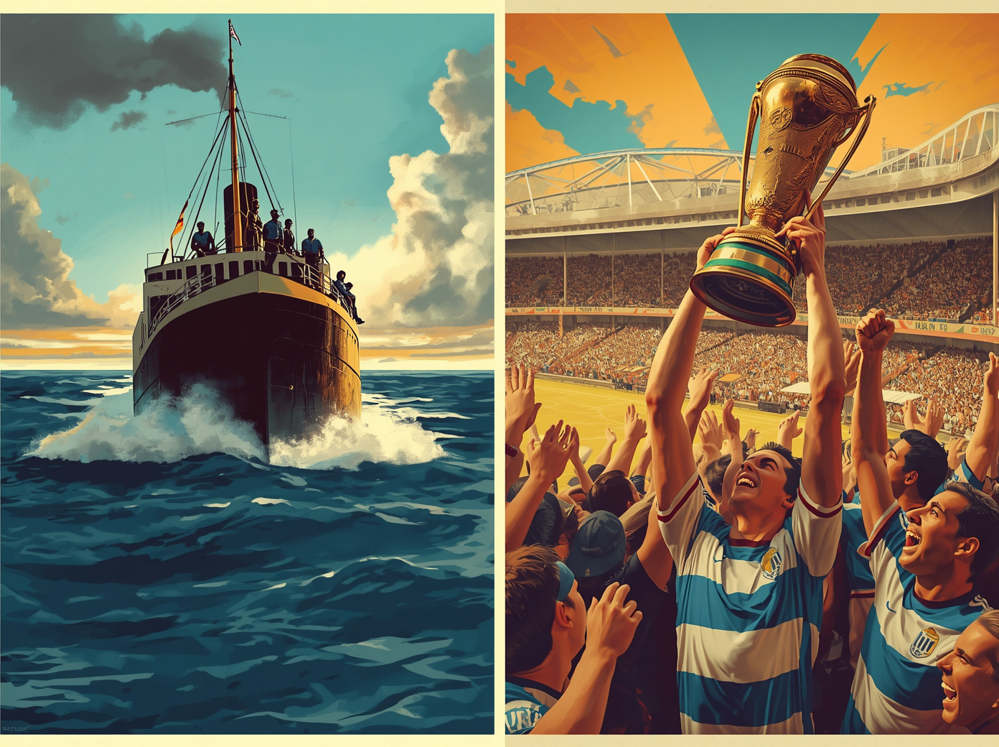
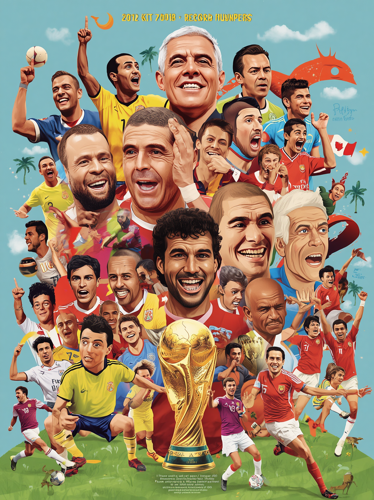

A História das Copas: Como Tudo Começou
Sabe aquela reunião de condomínio que todo mundo acha que vai dar errado, mas acaba virando uma festa histórica? Foi mais ou menos assim que a Copa do Mundo nasceu. Em 1930, o presidente da FIFA, Jules Rimet, teve a audácia de organizar um torneio mundial. O destino escolhido? O Uruguai. O detalhe é que cruzar o oceano naquela época não era questão de duas horinhas de voo, e sim de semanas de navio. Algumas seleções europeias quase desistiram só de pensar no enjoo marítimo. No fim, apenas 13 países participaram, não teve nem fase de eliminatórias (quem quisesse ir, ia) e os donos da casa, os uruguaios, levaram a primeira taça para casa. Mal sabiam eles o tamanho do monstro competitivo que tinham acabado de criar!

Grandes Lendas e Recordistas do Torneio
Falar de Copa do Mundo sem citar os "donos do campinho" é um crime para o UX do seu blog. Se hoje a gente debate se Messi ou Cristiano Ronaldo são os melhores, é porque homens como Pelé pavimentaram o caminho — o Rei do Futebol é o único humano a vencer três Copas (venceu a primeira com apenas 17 anos, idade em que a maioria de nós está só tentando passar de ano na escola). Mas a Copa também adora um recorde bizarro. Você sabia que o maior artilheiro em uma única edição é o francês Just Fontaine, que brocou 13 gols em 1958? E detalhe: ele jogou com a chuteira emprestada de um colega de equipe! Isso provando que o talento não está no "boot" caro, mas sim no pé.

/* PALETA DE CORES: NOSTALGIA RETRÔ (COPA DO MUNDO) */ :root { --cor-primaria: #0F2042; /* Azul Royal (Títulos, Menus e Botões Principais) */ --cor-fundo: #F4EFEA; /* Creme Vintage (Fundo da página - excelente UX) */ --cor-destaque: #C84B31; /* Vermelho Terracota (Banners, Links e Curiosidades) */ --cor-texto: #2D3748; /* Cinza Escuro (Texto dos artigos - leitura leve) */ } /* Exemplo prático de aplicação no corpo do blog */ body { background-color: var(--cor-fundo); color: var(--cor-texto); font-family: 'Georgia', serif; /* Opcional: dá o toque de jornal clássico */ } h1, h2, h3 { color: var(--cor-primaria); } a, .destaque-curiosidade { color: var(--cor-destaque); }